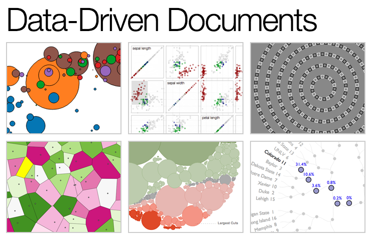
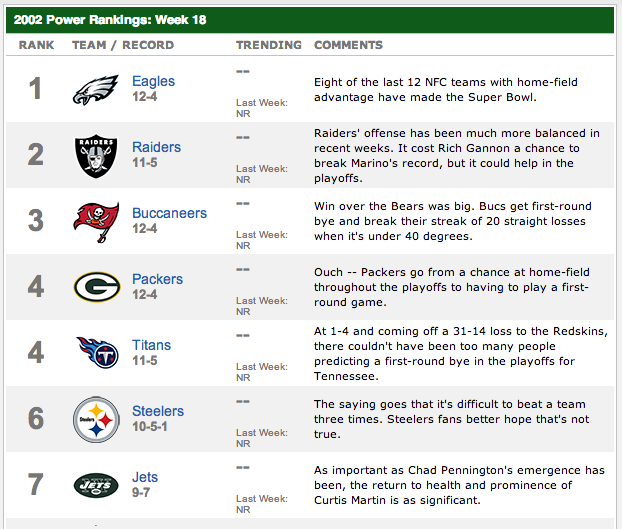
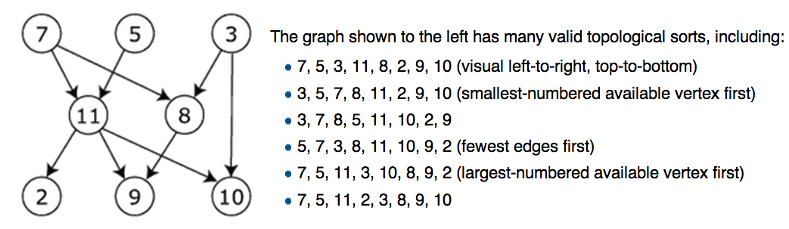
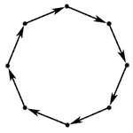
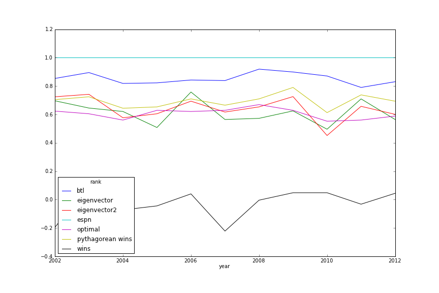
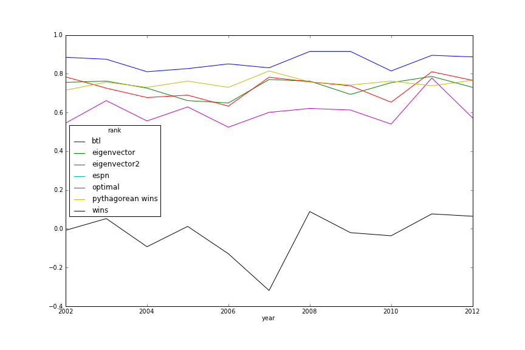
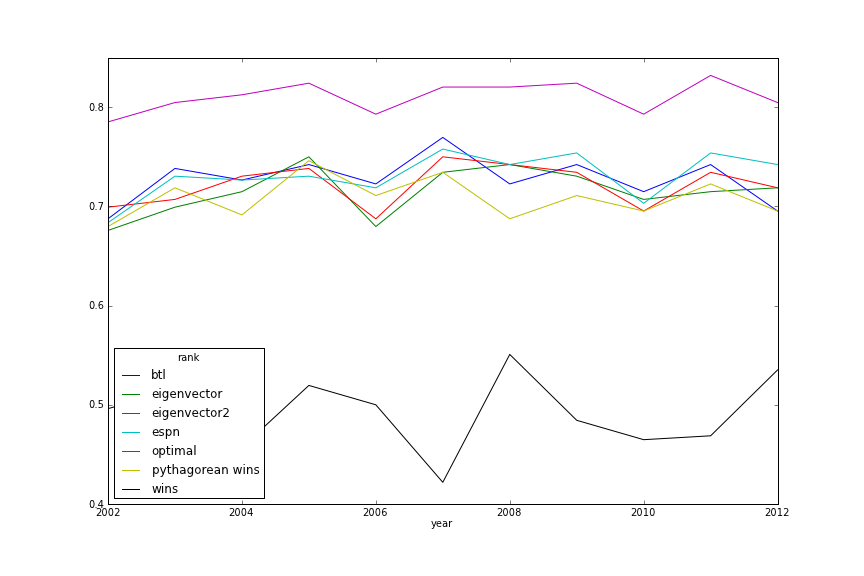
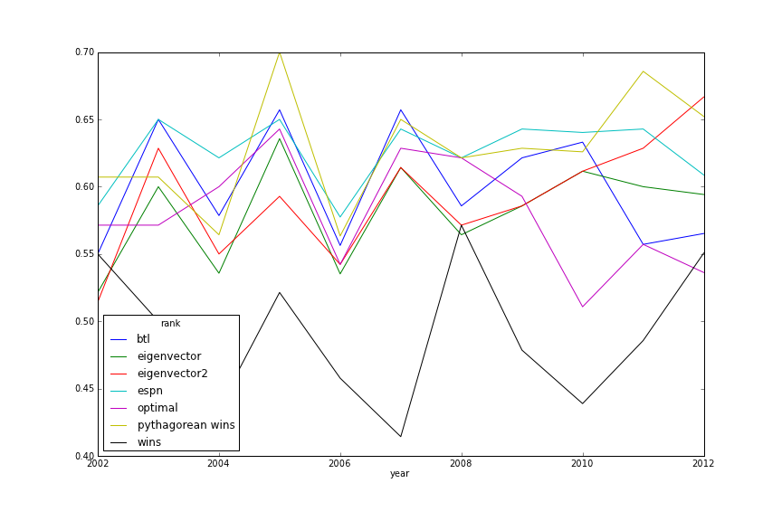
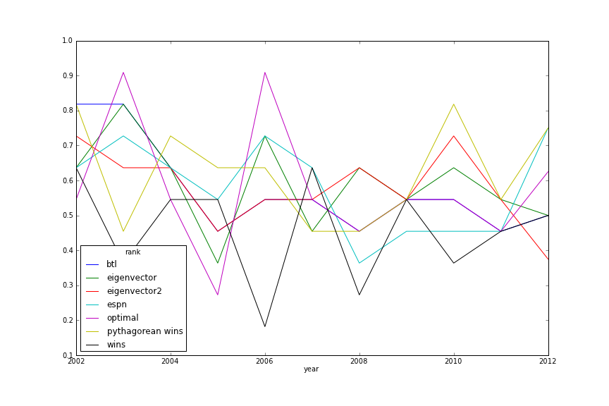

Ranking NFL teams
Awesome!
Introduction

5th year PhD candidate at NYU Stern
interests
- Social influence
- Causal Inference and Web Experiments
- Bayesian modeling
- Prediction
toolbox




lifelong Eagles fan

Outline
- What is a ranking?
- Evaluating rankings
- Six methods
- Empirical evaluation
- Ranking other things
Ranking == Decision Tool

where to go to college?
where to get a drink after the talk?
which product to check out?
Ranking == Description

which colleges are being chosen over others?
"A Revealed Preference Ranking of U.S. Colleges and Universities" (Avery et al. 2004)

which college football team is the best?
which tennis player is the best?
Ranking == Total ordering
- set of items: \( X \)
- binary relation: \( \geq \)
- transitivity: \( a \geq b \; \wedge \; b \geq c \Rightarrow a \geq c \)
- totality: \( a \geq b \; \vee \; b \geq a \; \forall a, b \in X \)
- anti-symmetry: \( a \geq b \; \wedge \; b \geq a \; \Leftrightarrow a = b \)
Ranking == Classification
Ranking problem can be transformed into a two-class classification problem via the pairwise transform.
Goal: Learn \( \; f : X \times X \rightarrow \{-1,1\} \).
Ranking == Regression
All we have to do is use: \( (\mathbb{R}, \geq) \)!
- Obviously satisfies total ordering criteria.
- But has a bit more: we have/need a metric.
- Shows ranking can be a regression problem.
Goal: Learn scoring function \( q : X \rightarrow \mathbb{R} \) .
Getting it wrong: Loss Functions
- Descriptive loss
- Predictive loss
- Ranking agreements
Zero-One Loss
Count the games where the ranking-predicted winner is upset.
Misrank Loss
If the ranking-predicted winner loses, add the difference in ranks to the loss.
Win Matrix
Ranking Agreement
Kendall tau distance is a metric that counts the number of pairwise disagreements between two rankings.
Two rankings \( R_1, R_2 \) disagree on pair \( i, j \) if:
\[ R_1(i) > R_1(j) \wedge R_2(i) < R_2(j) \]
Useful if we want to match some existing ranking, say ESPN.com Power Rankings.
Methods
- Elo
- Pythagorean wins
- Eigenvector
- Bradley-Terry-Luce
- Feature engineering
- Optimal Rankings
Elo

Elo

Elo ranking
Ratings of players A and B: \( R_A, R_B \)
Expected score of A while playing B:
\[ E(R_A, R_B) = \frac{1}{1 + 10^{(R_B - R_A)/400}} \]
Note that \( E(R_A, R_B) = 1 - E(R_B, R_A) \)
Elo score updates
Outcome when A plays B is \( S_{AB} \in {0, 0.5, 1} \)
\[ R_A' \leftarrow R_A + K ( E(R_A, R_B) - S_{AB} ) \]
\[ R_B' \leftarrow R_B + K ( E(R_B, R_A) - S_{BA} ) \]
\[ R_B' \leftarrow R_B - K ( E(R_A, R_A) - S_{AB} ) \]
Problems
- How to set parameters?
- How often to update?
Pythagorean Wins
From 1988 through 2004, 11 of 16 Super Bowls were won by the team that led the NFL in Pythagorean wins, while only seven were won by the team with the most actual victories. Super Bowl champions that led the league in Pythagorean wins but not actual wins include the 2004 Patriots, 2000 Ravens, 1999 Rams and 1997 Broncos.
— Football Outsiders Almanac (2011)
See also this post.
Formula
Points for \( = y \), Points against \( = x \)
Win Rate \( = \frac{y^{\beta}}{x^{\beta} + y^{\beta}} \)
Set \( \beta \) empirically, different for each sport.
\( \beta \) can be thought of as a shrinkage parameter.
Visualization

Pythagorean Wins
| 1 | 9 | 17 | 25 | ||||
| 2 | 10 | 18 | 26 | ||||
| 3 | 11 | 19 | 27 | ||||
| 4 | 12 | 20 | 28 | ||||
| 5 | 13 | 21 | 29 | ||||
| 6 | 14 | 22 | 30 | ||||
| 7 | 15 | 23 | 31 | ||||
| 8 | 16 | 24 | 32 |
Score


0 — 7
Eigenvector Method
Idea: iteratively adjust for strength of schedule. Give more credit to victories over teams which are "good"
\( r_i \) is the score of team \( i \). \( a_{ij} \) is 1 if \( i \) beat \( j \).
\[ \lambda r_i = \frac{1}{n_i} = \sum_{j=1}^N a_{ij} r_j \]
\[ \mathbf{A} \mathbf{r} = \lambda \mathbf{r} \]
Perron-Frobenius
If \( \mathbf{A} \) is nonnegative and irreducible, it has a strictly positive eigenvector corresponding to its largest eigenvalue.
Intuition
\[ \begin{array}{r} DAL \\ NYG \\ PHI \\ WAS \end{array} \left( \begin{array}{cccc} 0 & 1 & 2 & 0 \\ 1 & 0 & 1 & 1 \\ 0 & 1 & 0 & 0 \\ 2 & 1 & 2 & 0 \end{array} \right) \left( \begin{array}{c} 1 \\ 1 \\ 1 \\ 1 \end{array} \right) = \left( \begin{array}{c} 3 \\ 3 \\ 1 \\ 5 \end{array} \right) \]
Second order wins
\[ \left( \begin{array}{cccc} 0 & 1 & 2 & 0 \\ 1 & 0 & 1 & 1 \\ 0 & 1 & 0 & 0 \\ 2 & 1 & 2 & 0 \end{array} \right) \left( \begin{array}{cccc} 0 & 1 & 2 & 0 \\ 1 & 0 & 1 & 1 \\ 0 & 1 & 0 & 0 \\ 2 & 1 & 2 & 0 \end{array} \right) \left( \begin{array}{c} 1 \\ 1 \\ 1 \\ 1 \end{array} \right) = \left( \begin{array}{c} 5 \\ 9 \\ 3 \\ 11 \end{array} \right) \]
Must normalize this output vector by its norm.
K-th order rank
\[ r_k = \frac{A^{k} r_0}{| A^{k} r_0 | } \]
The limit of this is just the first eigenvector!
Power iteration method
def power_iteration(m, iters=10000):
x0 = np.ones(m.shape[0])
for i in range(iters):
x0 = np.dot(m,x0)
x0 /= np.linalg.norm(x0,1)
return x0
Aside: PageRank
Redefine the preference matrix \( A \):
\[ A' = (1 - \alpha) A + \alpha \frac{1}{N} M \]
where \( M \) is a matrix of all ones.
Eigenvector Method
| 1 | 9 | 17 | 25 | ||||
| 2 | 10 | 18 | 26 | ||||
| 3 | 11 | 19 | 27 | ||||
| 4 | 12 | 20 | 28 | ||||
| 5 | 13 | 21 | 29 | ||||
| 6 | 14 | 22 | 30 | ||||
| 7 | 15 | 23 | 31 | ||||
| 8 | 16 | 24 | 32 |
Score
0 — 14
Bradley-Terry-Luce Model
\[ P(i>j) = \frac{1}{1 + e^{-(q_i - q_j)}} = \mbox{logit}^{-1}(q_i - q_j) \]
(Bradley & Terry, 1952; Luce, 1959)
This is basically the same as a Rasch model from education.
BTL Estimation
dummies = {}
for team in teams:
dummies[team] = (df['H'] == team).astype(np.int) - (df['V'] == team).astype(np.int)
df2 = pd.DataFrame(dummies)
df2['win'] = (df['PTSH'] > df['PTSV']).astype(np.int)
y, X = dmatrices('win ~ 0 + %s' % ' + '.join(teams), df2)
m = linear_model.LogisticRegression(C=c, penalty='l2', tol=1e-6,
fit_intercept=False)
m.fit(X, y)
quality_scores = clf.coef_[0]
Could easily use Bayesian estimation here.
BTL evolved
- Add a parameter for home-field advantage.
- Weight observations so that older games count less toward the likelihood.
- Regularization.
- Add control variables for random events that affect outcomes but are NOT part of team quality.
- e.g. fumbles lost, defensive touchdowns, missed field goals.
BTL Method
| 1 | 9 | 17 | 25 | ||||
| 2 | 10 | 18 | 26 | ||||
| 3 | 11 | 19 | 27 | ||||
| 4 | 12 | 20 | 28 | ||||
| 5 | 13 | 21 | 29 | ||||
| 6 | 14 | 22 | 30 | ||||
| 7 | 15 | 23 | 31 | ||||
| 8 | 16 | 24 | 32 |
Score
0 — 21
Feature Engineering
- Idea: don't score a team, score the inputs to success.
- We can estimate fewer parameters and get some inutition for rankings.
- Approach taken by Brian Burke at AdvancedNFLStats.com
- Use logistic regression: Generic WP \( = \mbox{logit}^{-1}(\mathbf{\beta}' \mathbf{x_i} ) \)
Features
Should be correlated with success AND stable over time
- Offensive Net Yards Per Attempt
- Defensive Net Yards Per Attempt
- Offensive run success rate
- Defensive run success rate
- Interception rate
- Defensive interception rate
- Fumble rate
- Penalty rate
Win Probability
38% — 62%
Optimal Rankings
What's the absolute best we can do in describing the data with a ranking?
Games as a Graph
Topological Sort
Cycles
Long Cycles
Removing the Cycles
A feedback arc set is a set of edges whose removal makes the graph acyclic.
# g = igraph.Graph()
feedback_arcs = g.feedback_arc_set(method='exact')
g.delete_edges(feedback_arcs)
NP-Complete!
Optimal Rank
| 1 | 9 | 17 | 25 | ||||
| 2 | 10 | 18 | 26 | ||||
| 3 | 11 | 19 | 27 | ||||
| 4 | 12 | 20 | 28 | ||||
| 5 | 13 | 21 | 29 | ||||
| 6 | 14 | 22 | 30 | ||||
| 7 | 15 | 23 | 31 | ||||
| 8 | 16 | 24 | 32 |
Score
0 — 28
Evaluation
Week 8 Power Rankings Similarity
Week 17 Power Rankings Similarity
Descriptive
In-Season Prediction
Post-Season Prediction
Score
24 — 28
Ranking people
Turn it into a pair-wise comparison
- Twitter reputation: reciprocity of follow-relationship
- Influence: which sharer of same link gets more clicks?
- Online dating: who spurns messages from whom?
Make your Super Bowl predictions
http://creds.me
(shameless plug)
Thanks! Any questions?